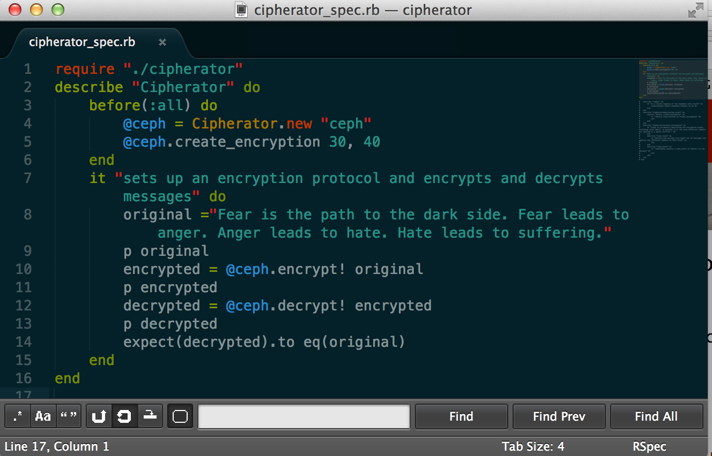

As Christendom contains many separate nations, and the body contains many organs, in both cases parts of a greater whole that functions in pre-established harmony, canst not Ruby objects be thus composed jointly of parts which be, in their own rights objects defined by classes unto themselves? Or is this very notion a heresy of the first order?
Indeed, an example shall suffice to illustrate that class nesting can be put to good use. The case in qeustion (sic) shall be a symmetric encryption engine, the Cipherator. The Cipherator will generate a number of simple ciphers--random mappings of the set of characters in the available alphabet onto itself. In order to erase character frequency data, the message will be divided into subsets, to which different ciphers will be applied. Then, a series of such 'cipher packs' will be applied, forming a 'cipher stack'--which will be applied to encrypt a message, and applied in reverse to decript a message encrypted according to the same cipher stack.
We shall suppose the Cipherator to be minimally specced as follows, and it shall be left to the reader to devise more indepth tests, as well as to devise an automated CipherBr8ker capable of cracking encryption similar to that applied by Cipherator:

Manifestly, the most totally best practices way to do this is probably with nested classes. inside the Cipherator object create a cipher, then apply that a few times to make a pack, than make a stack out of packs. bing bang boom:
checks out my code on github, noobz!
ps i didn't bother to make the method to save the encryption stack to yaml yet. you should do that. but then you should encrypt the encryption key, so nobody can steal it. but then, i guess you'll have to encrypt the key you use for that as well...